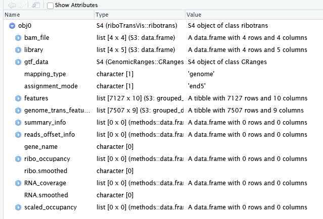

gp <- c("wt-rep1","wt-rep2","sgeIF5A-rep1","sgeIF5A-rep2")
ribobams <- c("WT.1.sorted.bam","WT.2.sorted.bam","eIF5Ad.1.sorted.bam","eIF5Ad.2.sorted.bam")
obj0 <- construct_ribotrans(genome_file = "../../index-data/Saccharomyces_cerevisiae.R64-1-1.dna.toplevel.fa",
gtf_file = "../../index-data/Saccharomyces_cerevisiae.R64-1-1.112.gtf",
mapping_type = "genome",
assignment_mode = "end5",
extend = TRUE,
extend_upstream = 50,
extend_downstream = 50,
Ribo_bam_file = ribobams,
Ribo_sample_name = gp,
choose_longest_trans = T)4 Ribotrans object
The RiboTransVis package utilizes an object-oriented programming paradigm for the analysis of Ribo-seq data. At the core of this framework is the ribotrans object, which encapsulates all essential information required for downstream analysis. Most functions in the package are designed to operate on this object. Therefore, the first step in any Ribo-seq analysis workflow using RiboTransVis is to construct a well-defined ribotrans object. This object is typically created from a set of inputs including the transcriptome FASTA file, a GTF annotation file, and aligned Ribo-seq data in BAM format.
4.0.1 Constructing a Ribotrans Object
In this section, we demonstrate how to construct a RiboTrans object using Ribo-seq data obtained from wild-type (WT) and eIF5A knockout (sgeIF5A) yeast samples. This object serves as the core input for downstream translational profiling and visualization using RiboTransVis.
To create the RiboTrans object, you will need the following:
A reference genome sequence file in FASTA format
A corresponding gene annotation file in GTF format
Sample names
Aligned BAM files for each Ribo-seq sample
We specify that the BAM files are genome-aligned (not transcriptome-aligned) by setting mapping_type = “genome”. For assigning ribosome footprints to transcript features (e.g., CDS), we use the 5′-end rule by setting assignment_mode = “end5”.
In addition, we enable transcriptional region extension by setting extend = TRUE. This instructs RiboTrans to expand the annotation ranges defined in the GTF file, which can help recover reads that fall slightly upstream or downstream of annotated features. You can manually control the size of this extension via the extend_upstream and extend_downstream parameters (recommended: 50 nt).
Another important parameter is choose_longest_trans, which determines whether to reduce transcript redundancy by selecting a representative isoform for each gene. When set to TRUE, RiboTrans will select a canonical transcript per gene based on the following criteria:
The transcript with the longest CDS (coding sequence) is preferred.
If two or more transcripts share the same CDS length, the transcript with the longest overall exon span is selected as representative.
When this parameter is not set (or set to FALSE), RiboTrans analyzes all annotated isoforms for each gene, which can increase the resolution of analysis but will substantially prolong processing time and downstream computational complexity.
Below is an example of the recommended code for constructing a ribotrans object with two replicates for WT and two for eIF5A-knockout samples:
RiboTrans not only stores the input sample information but also automatically extracts and retains relevant transcript annotation data for downstream analysis. Below is a preview of the recently created Ribotrans object, including both sample metadata and the transcript features parsed from the annotation file:

When creating the object, we specified the extend parameter to expand both upstream and downstream regions of the CDS by 50 nucleotides. You can observe this setting reflected in the “features” slot of the RiboTrans object, where the lengths of utr5 and utr3 are both 50. You may also notice some genes with a CDS length of 0 — these correspond to non-coding genes, which do not contain annotated coding sequences, and thus their CDS length is set to 0 accordingly:
obj0
An object of class "ribotrans"
Slot "bam_file":
bam type sample sample_group
1 WT.1.sorted.bam ribo wt-rep1 wt-rep1
2 WT.2.sorted.bam ribo wt-rep2 wt-rep2
3 eIF5Ad.1.sorted.bam ribo sgeIF5A-rep1 sgeIF5A-rep1
4 eIF5Ad.2.sorted.bam ribo sgeIF5A-rep2 sgeIF5A-rep2
Slot "library":
bam mappped_reads type sample sample_group
1 WT.1.sorted.bam 44198992 ribo wt-rep1 wt-rep1
2 WT.2.sorted.bam 23149956 ribo wt-rep2 wt-rep2
3 eIF5Ad.1.sorted.bam 35041935 ribo sgeIF5A-rep1 sgeIF5A-rep1
4 eIF5Ad.2.sorted.bam 26762955 ribo sgeIF5A-rep2 sgeIF5A-rep2
Slot "gtf_data":
GRanges object with 41879 ranges and 16 metadata columns:
seqnames ranges strand | source type score phase gene_id gene_name gene_source
<Rle> <IRanges> <Rle> | <factor> <factor> <numeric> <integer> <character> <character> <character>
[1] IV 8683-9756 - | sgd gene NA <NA> YDL246C SOR2 sgd
[2] IV 8683-9756 - | sgd transcript NA <NA> YDL246C SOR2 sgd
[3] IV 8683-9756 - | sgd exon NA <NA> YDL246C SOR2 sgd
[4] IV 8686-9756 - | sgd CDS NA 0 YDL246C SOR2 sgd
[5] IV 9754-9756 - | sgd start_codon NA 0 YDL246C SOR2 sgd
... ... ... ... . ... ... ... ... ... ... ...
[41875] Mito 70162-70237 + | sgd exon NA <NA> tI(GAU)Q <NA> sgd
[41876] Mito 58009-62447 + | sgd gene NA <NA> Q0158 21S_RRNA sgd
[41877] Mito 58009-62447 + | sgd transcript NA <NA> Q0158 21S_RRNA sgd
[41878] Mito 58009-60724 + | sgd exon NA <NA> Q0158 21S_RRNA sgd
[41879] Mito 61868-62447 + | sgd exon NA <NA> Q0158 21S_RRNA sgd
gene_biotype transcript_id transcript_name transcript_source transcript_biotype tag
<character> <character> <character> <character> <character> <character>
[1] protein_coding <NA> <NA> <NA> <NA> <NA>
[2] protein_coding YDL246C_mRNA SOR2 sgd protein_coding Ensembl_canonical
[3] protein_coding YDL246C_mRNA SOR2 sgd protein_coding Ensembl_canonical
[4] protein_coding YDL246C_mRNA SOR2 sgd protein_coding Ensembl_canonical
[5] protein_coding YDL246C_mRNA SOR2 sgd protein_coding Ensembl_canonical
... ... ... ... ... ... ...
[41875] tRNA tI(GAU)Q_tRNA <NA> sgd tRNA Ensembl_canonical
[41876] rRNA <NA> <NA> <NA> <NA> <NA>
[41877] rRNA Q0158_rRNA <NA> sgd rRNA Ensembl_canonical
[41878] rRNA Q0158_rRNA <NA> sgd rRNA Ensembl_canonical
[41879] rRNA Q0158_rRNA <NA> sgd rRNA Ensembl_canonical
exon_number exon_id protein_id
<character> <character> <character>
[1] <NA> <NA> <NA>
[2] <NA> <NA> <NA>
[3] 1 YDL246C_mRNA-E1 <NA>
[4] 1 <NA> YDL246C
[5] 1 <NA> <NA>
... ... ... ...
[41875] 1 tI(GAU)Q_tRNA-E1 <NA>
[41876] <NA> <NA> <NA>
[41877] <NA> <NA> <NA>
[41878] 1 Q0158_rRNA-E1 <NA>
[41879] 2 Q0158_rRNA-E2 <NA>
-------
seqinfo: 17 sequences from an unspecified genome; no seqlengths
Slot "mapping_type":
[1] "genome"
Slot "assignment_mode":
[1] "end5"
Slot "features":
# A tibble: 7,127 × 10
# Groups: gene [7,127]
transcript_id idnew utr5 cds utr3 exonlen translen mstart mstop gene
<chr> <chr> <dbl> <dbl> <dbl> <dbl> <dbl> <dbl> <dbl> <chr>
1 tY(GUA)Q_tRNA tY(GUA)Q_tRNA|tY(GUA)Q_tRNA 50 0 50 184 184 0 0 tY(GUA)Q_tRNA
2 tX(XXX)L_tRNA tX(XXX)L_tRNA|tX(XXX)L_tRNA 50 0 50 180 180 0 0 tX(XXX)L_tRNA
3 tX(XXX)D_tRNA tX(XXX)D_tRNA|tX(XXX)D_tRNA 50 0 50 200 200 0 0 tX(XXX)D_tRNA
4 tW(UCA)Q_tRNA tW(UCA)Q_tRNA|tW(UCA)Q_tRNA 50 0 50 174 174 0 0 tW(UCA)Q_tRNA
5 tW(CCA)P_tRNA tW(CCA)P_tRNA|tW(CCA)P_tRNA 50 0 50 172 172 0 0 tW(CCA)P_tRNA
6 tW(CCA)M_tRNA tW(CCA)M_tRNA|tW(CCA)M_tRNA 50 0 50 172 172 0 0 tW(CCA)M_tRNA
7 tW(CCA)K_tRNA tW(CCA)K_tRNA|tW(CCA)K_tRNA 50 0 50 172 172 0 0 tW(CCA)K_tRNA
8 tW(CCA)J_tRNA tW(CCA)J_tRNA|tW(CCA)J_tRNA 50 0 50 172 172 0 0 tW(CCA)J_tRNA
9 tW(CCA)G2_tRNA tW(CCA)G2_tRNA|tW(CCA)G2_tRNA 50 0 50 172 172 0 0 tW(CCA)G2_tRNA
10 tW(CCA)G1_tRNA tW(CCA)G1_tRNA|tW(CCA)G1_tRNA 50 0 50 172 172 0 0 tW(CCA)G1_tRNA
# ℹ 7,117 more rows
# ℹ Use `print(n = ...)` to see more rows
Slot "genome_trans_features":
# A tibble: 7,507 × 9
# Groups: gene_name, transcript_id [7,127]
seqnames start end width tx_len strand gene_name transcript_id f_len
<fct> <dbl> <dbl> <dbl> <dbl> <fct> <chr> <chr> <dbl>
1 Mito 6496 8244 1749 1749 + 15S_RRNA Q0020_rRNA 1749
2 Mito 57959 60724 2766 2766 + 21S_RRNA Q0158_rRNA 3396
3 Mito 61868 62497 630 3396 + 21S_RRNA Q0158_rRNA 3396
4 II 415933 416956 1024 1024 + AAC3 YBR085W_mRNA 1024
5 X 727355 728321 967 967 + AAD10 YJR155W_mRNA 967
6 III 313840 315031 1192 1192 + AAD3 YCR107W_mRNA 1192
7 XIV 359546 360689 1144 1144 + AAH1 YNL141W_mRNA 1144
8 XI 237486 238941 1456 1456 + AAT1 YKL106W_mRNA 1456
9 XI 226520 228815 2296 2296 + ABF1 YKL112W_mRNA 2296
10 XIII 411519 412170 652 652 + ABF2 YMR072W_mRNA 652
# ℹ 7,497 more rows
# ℹ Use `print(n = ...)` to see more rows
Slot "summary_info":
data frame with 0 columns and 0 rows
Slot "reads_offset_info":
data frame with 0 columns and 0 rows
Slot "gene_name":
character(0)
Slot "ribo_occupancy":
data frame with 0 columns and 0 rows
Slot "ribo.smoothed":
character(0)
Slot "RNA_coverage":
data frame with 0 columns and 0 rows
Slot "RNA.smoothed":
character(0)
Slot "scaled_occupancy":
data frame with 0 columns and 0 rows4.0.2 Note: Extension of annotation is not required for human or mouse genomes
For species such as human (Homo sapiens) or mouse (Mus musculus), most genes already contain well-annotated untranslated regions (UTRs), including 5′UTRs and 3′UTRs, in the reference GTF annotation. Therefore, it is generally unnecessary to manually extend the CDS regions upstream or downstream, as this information is already captured in the transcript models.
When working with these species, you can safely omit the parameters extend = TRUE, extend_upstream, and extend_downstream when constructing the ribotrans object. This will ensure that the annotation is used as-is and will simplify interpretation of coverage profiles in the UTR and CDS regions.
Below is an example R code block for human samples:
obj <- construct_ribotrans(gtf_file = "./Homo_sapiens.GRCh38.110.gtf",
mapping_type = "genome",
assignment_mode = "end3",
Ribo_bam_file = c("./bam-data/PC9-scr-1Ribo.bam",
"./bam-data/PC9-scr-2Ribo.bam",
"./bam-data/PC9-5A-1Ribo.bam",
"./bam-data/PC9-5A-2Ribo.bam"),
Ribo_sample_name = c("scramble-rep1","scramble-rep2","shEIF5A-rep1","shEIF5A-rep2"),
choose_longest_trans = T)4.0.3 Assignment mode choose
In ribosome profiling (Ribo-seq) data analysis, the assignment_mode parameter is critical for determining which end of each read is used when assigning reads to genomic or transcriptomic features.
4.0.3.1 Paired-end Sequencing Data
Note that when setting assignment_mode = "end3", it often actually corresponds to the 5′ end of the read — particularly when aligning R1 fastq files to the genome.
This behavior is due to strand orientation:
- Reads with SAM flag = 0 (usually from R1) align to genes on the negative (–) strand.
- Reads with SAM flag = 16 align to genes on the positive (+) strand.
As a result, the logical 5′ end of the transcript appears on the opposite strand in the alignment output, which can make "end3" correspond to the actual 5′ end of the reads.
On the other hand, if R2 fastq files are used for alignment, the configuration is reversed: setting assignment_mode = "end5" directly corresponds to the true 5′ end of the reads.
4.0.3.2 Single-end Sequencing Data
For single-end reads, the assignment_mode behaves in a more straightforward manner:
-
assignment_mode = "end5": counts using the 5′ end of the reads. -
assignment_mode = "end3": counts using the 3′ end of the reads.
4.0.3.3 Inspecting Strand Orientation with IGV
If unsure about which assignment_mode you should use, we strongly recommend loading your BAM file into IGV (Integrative Genomics Viewer) to visually inspect the orientation and strand of your aligned reads.
4.0.3.4 Transcriptome-aligned BAM Files
When working with alignments to the transcriptome (as opposed to the genome), the assignment mode reflects the actual orientation of the reads:
-
assignment_mode = "end5": corresponds to the 5′ end. -
assignment_mode = "end3": corresponds to the 3′ end.
There is no strand inversion in this case.
4.0.3.5 Summary
| Alignment Reference | Data Type | assignment_mode | Refers To |
|---|---|---|---|
| Genome | Paired-end (R1) | "end3" |
Actual 5′ end |
| Genome | Paired-end (R2) | "end5" |
Actual 5′ end |
| Genome | Single-end | "end5" |
5′ end |
| Genome | Single-end | "end3" |
3′ end |
| Transcriptome | Single-end | "end5" |
5′ end |
| Transcriptome | Single-end | "end3" |
3′ end |
Always verify strand orientation to ensure accurate read counting.